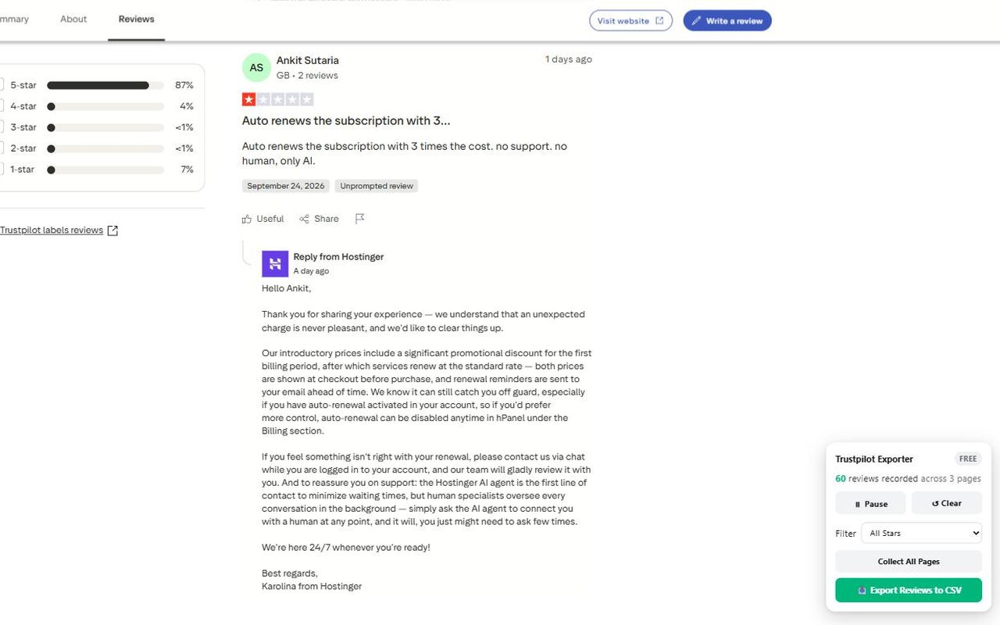
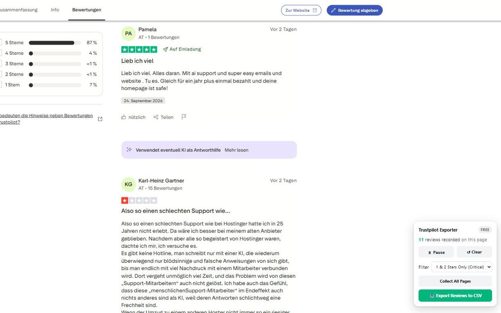

How to export (download) Trustpilot reviews to CSV or Excel
Trustpilot has no download button for another company's reviews. Copying them by hand takes forever. With the free Trustpilot Reviews Exporter Chrome extension you can save any company's reviews to a CSV file, ready for Excel or Google Sheets, in a couple of clicks.
Useful for competitor research, customer feedback analysis, finding common complaints, and agencies reporting on a client's reputation.
Add to Chrome, it's freeFree plan included · No sign-up · Runs only in your browser
Step by step
- Install Trustpilot Reviews Exporter from the Chrome Web Store. It's free and needs no account.
- Open any company's page on Trustpilot, for example
trustpilot.com/review/amazon.com. Every Trustpilot country site works too (UK, Germany, France, Spain, Brazil, Australia and more). - A small panel appears on the page and counts the reviews it has collected. Open more review pages and they're added to the same export.
- Optional: tick the critical-reviews filter to keep only 1-star and 2-star reviews.
- Click Export. The CSV downloads straight to your computer. Open it in Excel or Google Sheets.


What's in the spreadsheet
- Star rating
- Review date and date of experience
- Review title and full review text
- Author name and verified status
- Company reply
- Direct link to each review
Files are standard CSV with UTF-8 encoding, so they open cleanly in Excel, Google Sheets and Numbers.
Free vs. Pro
Questions
Can I download Trustpilot reviews?
Yes. Trustpilot has no download button for other companies' reviews, but this extension saves them to a CSV file you can open in Excel or Google Sheets.
Can I export Trustpilot reviews for free?
Yes. The free version exports up to 25 reviews per company with every column included. No account or sign-up.
Does it work for competitors' reviews, not just my own company?
Yes. It works on any public Trustpilot company page. It only reads reviews that are already publicly visible.
Do I need to log in to Trustpilot?
No. The extension works without a Trustpilot account.
Will accents and other languages show correctly in Excel?
Yes. The file is saved as UTF-8 CSV, so accents, line breaks and non-Latin text are kept.
Is my data sent anywhere?
No. Everything runs inside your browser and the file is saved directly to your computer.
Get Trustpilot Reviews Exporter to CSV & Excel